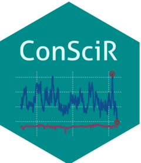

Changelog
Source:NEWS.md
ConSciR 0.3.0
- Added humidity, time, adjustment functions - currently under development.
- Added new contributors to package.
- Modified and developed graphing functions.
- Added formulation options to
calcAHfunction. - Removed ConSciR-TRHbivariate and ConSciR-Psychrometric Shiny applications. Moved these functions to ConSciR-App:
run_ConSciR_app().
ConSciR 0.2.0
CRAN release: 2025-09-10
- Added Buck equation as default for
calcPws. - Added Buck equation to
calcDP,calcTemp,calcRH_DP. - Added Frost Point calculation
calcFP- under development. - Correction to Humidity Ratio function
calcHR. - Correction to Air Density function
calcAD. - Updated Humidity functions article.
- Corrections for resubmission.